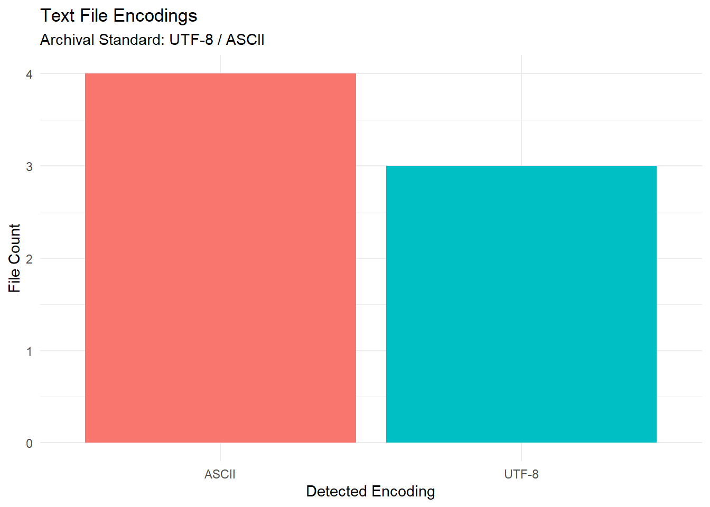

Code
# install.packages(c("tidyverse", "readr", "rstudioapi", "stringr"))Text files are the simplest form of documentation. However, they are often prone to encoding and structural issues that impede interoperability.
Ensure universal readability and “Archival Readiness” of text documents. Our objective is to validate UTF-8 encoding, identify “invisible” characters (BOM), and normalize line endings to ensure documents remain readable across all operating systems.
Character corruption (“Mojibake”) caused by legacy encodings (e.g., Windows-1252) and “link rot” from broken external URLs are the primary threats to the long-term usability of plain text documentation.
Key Curation Objectives:
We use readr for encoding detection and stringr for link extraction.
# install.packages(c("tidyverse", "readr", "rstudioapi", "stringr"))library(tidyverse)
library(readr) # For encoding guessing
library(stringr) # For Regex (Links/Emails)
library(rstudioapi) # For directory selectionif (interactive() && .Platform$OS.type == "windows") {
selected_dir <- rstudioapi::selectDirectory(caption = "Select Text Directory")
} else {
selected_dir <- NULL
}
if (!is.null(selected_dir)) {
target_dir <- selected_dir
} else {
target_dir <- params$target_dir
}
print(paste("Analyzing directory:", target_dir))[1] "Analyzing directory: data/Inspect_Text/"We scan for .txt, .md, .csv, and .rmd files. The inspection extracts encoding confidence, checks for the hidden BOM, identifies line endings, and scans for PII (Emails).
message("Generating Text Report...")
text_files <- list.files(
path = target_dir,
pattern = "\\.(txt|md|csv|rmd)$",
recursive = TRUE,
full.names = TRUE,
ignore.case = TRUE
)
# Regex Patterns
url_pattern <- "http[s]?://(?:[a-zA-Z]|[0-9]|[$-_@.&+]|[!*\\(\\),]|(?:%[0-9a-fA-F][0-9a-fA-F]))+"
email_pattern <- "[a-zA-Z0-9._%+-]+@[a-zA-Z0-9.-]+\\.[a-zA-Z]{2,}"
report <- purrr::map_dfr(text_files, function(file_path) {
fname <- basename(file_path)
tryCatch({
# 1. BOM Detection (Read raw bytes)
con <- file(file_path, "rb")
bytes <- readBin(con, "raw", n = 4)
close(con)
# Check for UTF-8 BOM (EF BB BF)
has_bom <- identical(bytes[1:3], as.raw(c(0xef, 0xbb, 0xbf)))
# 2. Encoding Guess
guess <- readr::guess_encoding(file_path, n_max = 1000)[1, ]
encoding <- if (!is.na(guess$encoding)) guess$encoding else "Unknown"
confidence <- if (!is.na(guess$confidence)) guess$confidence else 0
# 3. Content Analysis (Read text)
# Read safely with UTF-8 fallback
content_lines <- readLines(file_path, warn = FALSE)
full_text <- paste(content_lines, collapse = "\n")
# 4. Line Ending Detection
# We read raw again to distinguish \r\n vs \n (readLines normalizes them)
raw_text <- readChar(file_path, nchars = 2000, useBytes = TRUE)
eol_type <- "Unknown"
if (grepl("\r\n", raw_text)) {
eol_type <- "Windows (CRLF)"
} else if (grepl("\n", raw_text)) {
eol_type <- "Unix (LF)"
} else if (grepl("\r", raw_text)) {
eol_type <- "Classic Mac (CR)"
}
# 5. Extract Artifacts
urls <- str_extract_all(full_text, url_pattern)[[1]]
emails <- str_extract_all(full_text, email_pattern)[[1]]
example_links <- paste(head(unique(urls), 3), collapse = ", ")
tibble(
FileName = fname,
Encoding = encoding,
Confidence = confidence,
HasBOM = has_bom,
LineEndings = eol_type,
LineCount = length(content_lines),
URL_Count = length(urls),
Email_Count = length(unique(emails)),
Example_Links = substr(example_links, 1, 100),
Status = "Success"
)
}, error = function(e) {
tibble(
FileName = fname, Encoding = NA, Confidence = NA, HasBOM = NA,
LineEndings = NA, LineCount = NA, URL_Count = NA, Email_Count = NA,
Example_Links = NA, Status = paste("Failed:", e$message)
)
})
})
# Display preview
print("--- Text Report Preview ---")[1] "--- Text Report Preview ---"head(report)# A tibble: 6 × 10
FileName Encoding Confidence HasBOM LineEndings LineCount URL_Count
<chr> <chr> <dbl> <lgl> <chr> <int> <int>
1 14_corr_ring_stats… ASCII 1 FALSE Windows (C… 12 0
2 388_corr_ring_stat… ASCII 1 FALSE Windows (C… 11 0
3 413_corr_ring_stat… ASCII 1 FALSE Windows (C… 13 0
4 File_tree.txt UTF-8 1 FALSE Windows (C… 146 0
5 readme.md ASCII 1 FALSE Windows (C… 31 1
6 README.txt UTF-8 1 FALSE Windows (C… 194 5
# ℹ 3 more variables: Email_Count <int>, Example_Links <chr>, Status <chr>We can visualize the distribution of detected encodings. Ideally, the repository should be 100% UTF-8 (or ASCII). Any “ISO-8859” or “Windows-1252” files are candidates for remediation.
if (nrow(report) > 0) {
ggplot(report %>% filter(Status == "Success"), aes(x = Encoding, fill = Encoding)) +
geom_bar() +
labs(
title = "Text File Encodings",
subtitle = "Archival Standard: UTF-8 / ASCII",
x = "Detected Encoding",
y = "File Count"
) +
theme_minimal() +
theme(legend.position = "none")
}
output_dir <- "Results/Inspect_Text"
dir.create(output_dir, recursive = TRUE, showWarnings = FALSE)
output_file <- file.path(output_dir, paste0("Text_Report_", format(Sys.Date(), "%Y%m%d"), ".csv"))
write.csv(report, output_file, row.names = FALSE)
print(paste("Report saved to:", output_file))[1] "Report saved to: Results/Inspect_Text/Text_Report_20260515.csv"Use the generated CSV to perform these checks:
PII Check (Email_Count > 0): Text files (especially Readmes) often contain developer contact info.Verify if these emails are personal (e.g., gmail.com) or professional.
Encoding (Encoding != UTF-8): Legacy files (Windows-1252) or other encodings may display corrupted characters on the web. It is recommended to convert them to UTF-8 using procedures like iconv (see below).
BOM (HasBOM = TRUE): The Byte Order Mark (BOM) is often unnecessary for UTF-8 and can break some scripts (e.g., shebang lines in bash). Curators can remove the BOM if the file is intended for code execution.
iconv: The standard command-line tool for converting text encodings (e.g., iconv -f WINDOWS-1252 -t UTF-8 in.txt > out.txt).
dos2unix: A tool to normalize line endings (converting Windows CRLF to Unix LF). This may be useful for ensuring scripts run correctly on Linux clusters.
Internet Archive Wayback Machine: Use this website to find live versions of broken URLs.
For users who want to run this analysis on a server (HPC), in a batch job, or from the command line, here is the pure R script version.
Download the R Script: Inspect_Text_Script.R
Inspect_Text_submit.sh)#!/bin/bash
#SBATCH --job-name=text_check
#SBATCH --nodes=1
#SBATCH --ntasks=1
#SBATCH --time=00:15:00
#SBATCH --mem=4G
#SBATCH --output=logs/text_check_%j.log
module load R
# Define target directory
TARGET_DIR="/scratch/user/project_data/docs"
# Prepare folders
mkdir -p Results/Inspect_Text
mkdir -p logs
# Run
echo "Starting Text Inspection on $TARGET_DIR"
Rscript Inspect_Text_Script.R "$TARGET_DIR"